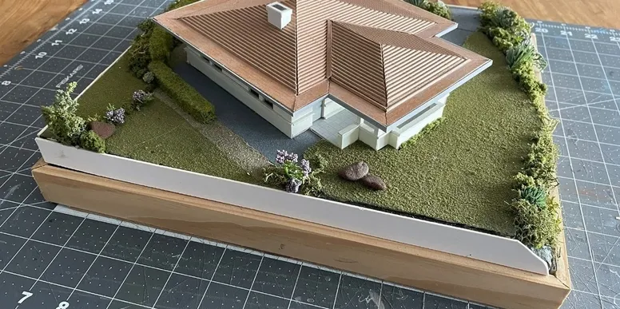
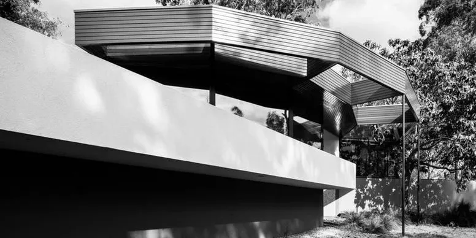
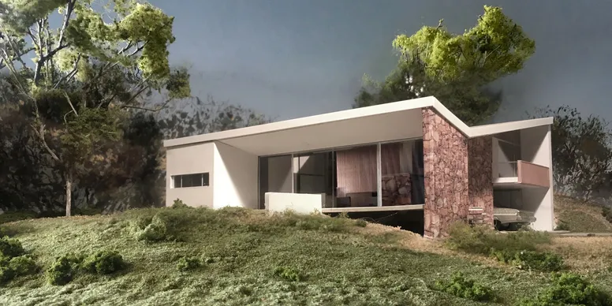
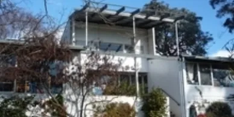
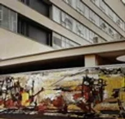
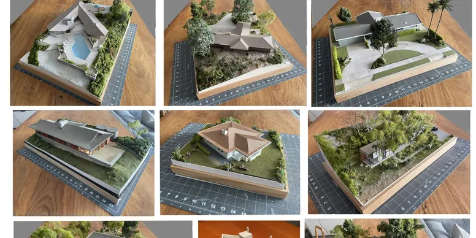

Events.
.
CANBERRA MODERN in the Canberra and Region Heritage Festival

Model Modern: Iconic Design at Miniature Scale
Exhibition
15, 22, 23 and 29 April 2023, 11.00am and 2.00pm

Growing up Modern at Canberra's Round House
with Roger Benjamin
Thursday 13 April 2023, 5.00pm - 7.00pm

Model Modern - Iconic Design at a Miniature Scale
Exhibition Launch and Panel Discussion
Friday 14 April 2023, 5.30pm-7.30pm

Manning Clark House Tours
Guided Tours
15, 22, 23 and 29 April 2023 11.00am and 2.00pm

**CANCELLED DUE TO ILLNESS**
Interior Design, Architecture and Client Collaboration: Margo Lewers and Sydney Ancher, 1930-1965
Saturday 15 April 2023, 3.00pm-5.00pm
